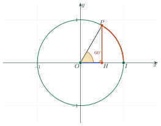
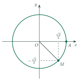
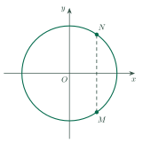
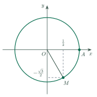
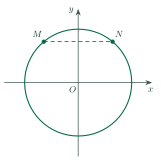
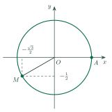
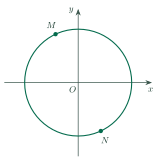

Trigonometric Values of Oriented AnglesGiá trị lượng giác của góc lượng giác
Grade 11 · Topic: Trigonometric FunctionsLớp 11 · Chủ đề: Hàm số lượng giác
1Lesson IntroductionGiới thiệu bài học
Learning goalsMục tiêu bài học
By the end of this lesson you can:
Sau bài học này, em có thể:
describe an oriented angle and its measure in degrees and in radians;
mô tả góc lượng giác và số đo của nó bằng độ và radian;
convert between degrees and radians and compute arc length;
đổi giữa độ và radian, tính độ dài cung;
define sin, cos, tan and cot with the trigonometric circle;
định nghĩa sin, cos, tan, cot bằng đường tròn lượng giác;
use the values of special angles and the sign in each quadrant;
dùng giá trị của các góc đặc biệt và dấu trong từng góc phần tư;
use the basic identities and the values of related angles (opposite, supplementary, complementary).
dùng các hệ thức cơ bản và giá trị của các góc liên quan đặc biệt (góc đối, góc bù, góc phụ).
2Mathematical VocabularyTừ vựng Toán học
oriented angle – an angle with a direction of rotation from the initial side to the terminal side.
Góc lượng giác – góc có kèm chiều quay từ tia đầu đến tia cuối.
initial side, terminal side – the starting ray and the ending ray of the rotation.
Tia đầu, tia cuối – tia bắt đầu và tia kết thúc của phép quay.
radian – the angle at the centre of a circle that cuts an arc as long as the radius.
Radian – góc ở tâm của đường tròn chắn cung có độ dài bằng bán kính.
degree – one 360th of a full turn: \(1^\circ=\dfrac{\pi}{180}\) rad.
Độ – một phần 360 của vòng tròn: \(1^\circ=\dfrac{\pi}{180}\) rad.
trigonometric circle – the circle of radius 1, centre at the origin, with a chosen direction of rotation.
Đường tròn lượng giác – đường tròn bán kính 1, tâm ở gốc tọa độ, có chọn chiều quay.
arc length – the length of part of a circle.
Độ dài cung – độ dài một phần của đường tròn.
sine, cosine, tangent, cotangent – the four trigonometric functions of an angle.
sin, cos, tan, cot – bốn giá trị lượng giác của một góc.
quadrant – one of the four parts of the coordinate plane.
Góc phần tư – một trong bốn phần của mặt phẳng tọa độ.
opposite, supplementary, complementary angles – pairs with sum \(0\), \(\pi\), \(\dfrac{\pi}{2}\).
Góc đối, góc bù, góc phụ – các cặp góc có tổng bằng \(0\), \(\pi\), \(\dfrac{\pi}{2}\).
3Useful English PhrasesCụm từ tiếng Anh thường gặp
Convert the angle to radians.
Đổi số đo góc sang radian.
Find the length of the arc.
Tìm độ dài cung.
Find the exact value of \(\sin\dfrac{\pi}{3}\).
Tìm giá trị chính xác của \(\sin\dfrac{\pi}{3}\).
In which quadrant is the angle?
Góc nằm ở góc phần tư nào?
Use the identity to find \(\sin\alpha\).
Dùng đẳng thức để tìm \(\sin\alpha\).
Give your answer in terms of \(\pi\).
Viết đáp số theo \(\pi\).
4Prerequisite ReviewÔn tập kiến thức nền
Right triangle. For an acute angle \(\alpha\): \(\sin\alpha=\dfrac{\text{opposite}}{\text{hypotenuse}}\), \(\cos\alpha=\dfrac{\text{adjacent}}{\text{hypotenuse}}\), \(\tan\alpha=\dfrac{\text{opposite}}{\text{adjacent}}\).
Tam giác vuông. Với góc nhọn \(\alpha\): \(\sin\alpha=\dfrac{\text{đối}}{\text{huyền}}\), \(\cos\alpha=\dfrac{\text{kề}}{\text{huyền}}\), \(\tan\alpha=\dfrac{\text{đối}}{\text{kề}}\).
Circle. The circumference of a circle of radius \(R\) is \(2\pi R\).
Đường tròn. Chu vi đường tròn bán kính \(R\) là \(2\pi R\).
5TheoryLý thuyết
5.1 Oriented anglesGóc lượng giác và số đo
DefinitionĐịnh nghĩa
Rotate a ray \(Ou\) about \(O\) until it reaches the ray \(Ov\). The rotation has a direction: anticlockwise is positive, clockwise is negative. The result is an oriented angle with initial side \(Ou\) and terminal side \(Ov\), written \((Ou,Ov)\).
Quay tia \(Ou\) quanh \(O\) đến khi trùng tia \(Ov\). Phép quay có chiều: ngược chiều kim đồng hồ là chiều dương, cùng chiều kim đồng hồ là chiều âm. Kết quả là một góc lượng giác có tia đầu \(Ou\), tia cuối \(Ov\), kí hiệu \((Ou,Ov)\).
If one measure of \((Ou,Ov)\) is \(\alpha\), every measure has the form
Nếu một số đo của \((Ou,Ov)\) là \(\alpha\) thì mọi số đo của nó có dạng
Watch out!Lưu ý
Different angles such as \(\dfrac{\pi}{3}\) and \(\dfrac{7\pi}{3}\) have the same terminal side, but they are different oriented angles. Two angles have the same terminal side exactly when they differ by a multiple of \(2\pi\).
Các góc như \(\dfrac{\pi}{3}\) và \(\dfrac{7\pi}{3}\) có cùng tia cuối nhưng là những góc lượng giác khác nhau. Hai góc có cùng tia cuối khi và chỉ khi hiệu của chúng là bội của \(2\pi\).
5.2 Radians and arc lengthRadian và độ dài cung
DefinitionĐịnh nghĩa
An angle of 1 radian is the central angle that subtends an arc as long as the radius. A half turn is \(\pi\) radians.
Góc 1 radian là góc ở tâm chắn cung có độ dài bằng bán kính. Nửa vòng tròn là \(\pi\) radian.
Arc length: on a circle of radius \(R\), a central angle \(\alpha\) (in radians) subtends an arc of length \(\ell=R\alpha\).
Độ dài cung: trên đường tròn bán kính \(R\), góc ở tâm \(\alpha\) (radian) chắn cung dài \(\ell=R\alpha\).
| DegreesĐộ | RadiansRadian |
|---|---|
| \(0^\circ\) | \(0\) |
| \(30^\circ\) | \(\dfrac{\pi}{6}\) |
| \(45^\circ\) | \(\dfrac{\pi}{4}\) |
| \(60^\circ\) | \(\dfrac{\pi}{3}\) |
| \(90^\circ\) | \(\dfrac{\pi}{2}\) |
| \(180^\circ\) | \(\pi\) |
| \(270^\circ\) | \(\dfrac{3\pi}{2}\) |
| \(360^\circ\) | \(2\pi\) |
5.3 The trigonometric circle and trigonometric valuesĐường tròn lượng giác và giá trị lượng giác
DefinitionĐịnh nghĩa
On the trigonometric circle, let \(P\) be the point reached after turning by the angle \(\alpha\) from \(I(1;0)\). Then
Trên đường tròn lượng giác, gọi \(P\) là điểm có được sau khi quay góc \(\alpha\) từ \(I(1;0)\). Khi đó

| QuadrantGóc phần tư | sinsin | coscos | tan, cottan, cot |
|---|---|---|---|
| I \((0;\dfrac{\pi}{2})\) | + | + | + |
| II \((\dfrac{\pi}{2};\pi)\) | + | − | − |
| III \((\pi;\dfrac{3\pi}{2})\) | − | − | + |
| IV \((\dfrac{3\pi}{2};2\pi)\) | − | + | − |
| \(\alpha\)\(\alpha\) | sinsin | coscos | tantan | cotcot |
|---|---|---|---|---|
| \(0\) | \(0\) | \(1\) | \(0\) | undefinedkhông xác định |
| \(\dfrac{\pi}{6}\) | \(\dfrac12\) | \(\dfrac{\sqrt3}{2}\) | \(\dfrac{\sqrt3}{3}\) | \(\sqrt3\) |
| \(\dfrac{\pi}{4}\) | \(\dfrac{\sqrt2}{2}\) | \(\dfrac{\sqrt2}{2}\) | \(1\) | \(1\) |
| \(\dfrac{\pi}{3}\) | \(\dfrac{\sqrt3}{2}\) | \(\dfrac12\) | \(\sqrt3\) | \(\dfrac{\sqrt3}{3}\) |
| \(\dfrac{\pi}{2}\) | \(1\) | \(0\) | undefinedkhông xác định | \(0\) |
5.4 Basic identitiesCác hệ thức lượng giác cơ bản
Basic identitiesHệ thức cơ bản
The first one follows from \(P(\cos\alpha;\sin\alpha)\) lying on the circle \(x^2+y^2=1\); the others follow by dividing by \(\cos^2\alpha\) or \(\sin^2\alpha\).
Hệ thức đầu suy ra từ việc \(P(\cos\alpha;\sin\alpha)\) nằm trên đường tròn \(x^2+y^2=1\); các hệ thức còn lại có được khi chia cho \(\cos^2\alpha\) hoặc \(\sin^2\alpha\).
Watch out!Lưu ý
Write \(\sin^2\alpha\) for \((\sin\alpha)^2\). When the angle has no unit, it is in radians.
Viết \(\sin^2\alpha\) cho \((\sin\alpha)^2\). Góc không ghi đơn vị được hiểu là radian.
5.5 Values of related anglesGiá trị lượng giác của các góc liên quan đặc biệt
| RelationQuan hệ | sinsin | coscos | tantan | cotcot |
|---|---|---|---|---|
| Opposite angles: \(-\alpha\)Góc đối: \(-\alpha\) | \(-\sin\alpha\) | \(\cos\alpha\) | \(-\tan\alpha\) | \(-\cot\alpha\) |
| Supplementary angles: \(\pi-\alpha\)Góc bù: \(\pi-\alpha\) | \(\sin\alpha\) | \(-\cos\alpha\) | \(-\tan\alpha\) | \(-\cot\alpha\) |
| Differ by \(\pi\): \(\alpha+\pi\)Hơn kém \(\pi\): \(\alpha+\pi\) | \(-\sin\alpha\) | \(-\cos\alpha\) | \(\tan\alpha\) | \(\cot\alpha\) |
| Complementary angles: \(\dfrac{\pi}{2}-\alpha\)Góc phụ: \(\dfrac{\pi}{2}-\alpha\) | \(\cos\alpha\) | \(\sin\alpha\) | \(\cot\alpha\) | \(\tan\alpha\) |
Tip: to find a value, first add or subtract a multiple of \(2\pi\) to reach an angle in \([0;2\pi)\), then use the table above.
Mẹo: muốn tính một giá trị, trước hết cộng hoặc trừ bội của \(2\pi\) để đưa góc về \([0;2\pi)\), rồi dùng bảng trên.
6Worked ExamplesVí dụ có lời giải
ExampleVí dụ 1BasicCơ bản – Converting anglesĐổi số đo góc
(a) Convert \(135^\circ\) to radians.
(b) Convert \(\dfrac{5\pi}{6}\) rad to degrees.
(a) Đổi \(135^\circ\) sang radian.
(b) Đổi \(\dfrac{5\pi}{6}\) rad sang độ.
Analysis: Use \(180^\circ=\pi\) rad: multiply by \(\dfrac{\pi}{180}\) to go to radians, by \(\dfrac{180}{\pi}\) to go to degrees.
Phân tích: Dùng \(180^\circ=\pi\) rad: nhân với \(\dfrac{\pi}{180}\) để sang radian, nhân với \(\dfrac{180}{\pi}\) để sang độ.
(a) \(135\cdot\dfrac{\pi}{180}=\dfrac{3\pi}{4}\).
(a) \(135\cdot\dfrac{\pi}{180}=\dfrac{3\pi}{4}\).
(b) \(\dfrac{5\pi}{6}\cdot\dfrac{180}{\pi}=150\), so \(150^\circ\).
(b) \(\dfrac{5\pi}{6}\cdot\dfrac{180}{\pi}=150\) nên \(150^\circ\).
ExampleVí dụ 2BasicCơ bản – Oriented anglesGóc lượng giác
Find the measure in \([0;2\pi)\) of the oriented angle whose measure is \(-\dfrac{11\pi}{6}\), and write all its measures.
Tìm số đo thuộc \([0;2\pi)\) của góc lượng giác có số đo \(-\dfrac{11\pi}{6}\) và viết mọi số đo của nó.
Analysis: Add a multiple of \(2\pi\) until the result lies in \([0;2\pi)\).
Phân tích: Cộng thêm bội của \(2\pi\) cho đến khi kết quả thuộc \([0;2\pi)\).
\(-\dfrac{11\pi}{6}+2\pi=\dfrac{\pi}{6}\in[0;2\pi)\).
\(-\dfrac{11\pi}{6}+2\pi=\dfrac{\pi}{6}\in[0;2\pi)\).
All measures: \(\dfrac{\pi}{6}+k2\pi\), \(k\in\mathbb{Z}\).
Mọi số đo: \(\dfrac{\pi}{6}+k2\pi\), \(k\in\mathbb{Z}\).
ExampleVí dụ 3IntermediateTrung bình – Arc lengthĐộ dài cung
A circle has radius \(6\) cm. Find the length of the arc subtended by a central angle of \(120^\circ\).
Một đường tròn có bán kính \(6\) cm. Tính độ dài cung chắn bởi góc ở tâm \(120^\circ\).
Analysis: First change the angle to radians, then use \(\ell=R\alpha\).
Phân tích: Đổi góc sang radian trước, rồi dùng \(\ell=R\alpha\).
\(120^\circ=\dfrac{2\pi}{3}\) rad.
\(120^\circ=\dfrac{2\pi}{3}\) rad.
\(\ell=6\cdot\dfrac{2\pi}{3}=4\pi\approx 12.57\) cm.
\(\ell=6\cdot\dfrac{2\pi}{3}=4\pi\approx 12{,}57\) cm.
ExampleVí dụ 4IntermediateTrung bình – Related anglesGóc liên quan đặc biệt
Find \(\cos\dfrac{5\pi}{6}\), \(\sin\dfrac{7\pi}{6}\) and \(\tan\left(-\dfrac{\pi}{3}\right)\).
Tính \(\cos\dfrac{5\pi}{6}\), \(\sin\dfrac{7\pi}{6}\) và \(\tan\left(-\dfrac{\pi}{3}\right)\).
Analysis: Write each angle as \(\pi-\alpha\), \(\pi+\alpha\) or \(-\alpha\) with a special angle \(\alpha\).
Phân tích: Viết mỗi góc dưới dạng \(\pi-\alpha\), \(\pi+\alpha\) hoặc \(-\alpha\) với \(\alpha\) là góc đặc biệt.
\(\cos\dfrac{5\pi}{6}=\cos\left(\pi-\dfrac{\pi}{6}\right)=-\cos\dfrac{\pi}{6}=-\dfrac{\sqrt3}{2}\).
\(\cos\dfrac{5\pi}{6}=\cos\left(\pi-\dfrac{\pi}{6}\right)=-\cos\dfrac{\pi}{6}=-\dfrac{\sqrt3}{2}\).
\(\sin\dfrac{7\pi}{6}=\sin\left(\pi+\dfrac{\pi}{6}\right)=-\sin\dfrac{\pi}{6}=-\dfrac12\).
\(\sin\dfrac{7\pi}{6}=\sin\left(\pi+\dfrac{\pi}{6}\right)=-\sin\dfrac{\pi}{6}=-\dfrac12\).
\(\tan\left(-\dfrac{\pi}{3}\right)=-\tan\dfrac{\pi}{3}=-\sqrt3\).
\(\tan\left(-\dfrac{\pi}{3}\right)=-\tan\dfrac{\pi}{3}=-\sqrt3\).
ExampleVí dụ 5AdvancedNâng cao – Using the identityDùng hệ thức cơ bản
Given \(\cos\alpha=\dfrac35\) and \(\dfrac{3\pi}{2}\lt\alpha\lt 2\pi\), find \(\sin\alpha\), \(\tan\alpha\) and \(\cot\alpha\).
Cho \(\cos\alpha=\dfrac35\) và \(\dfrac{3\pi}{2}\lt\alpha\lt 2\pi\). Tính \(\sin\alpha\), \(\tan\alpha\) và \(\cot\alpha\).
Analysis: Use \(\sin^2\alpha=1-\cos^2\alpha\), then choose the sign from the quadrant.
Phân tích: Dùng \(\sin^2\alpha=1-\cos^2\alpha\), rồi chọn dấu theo góc phần tư.
\(\sin^2\alpha=1-\dfrac{9}{25}=\dfrac{16}{25}\), so \(\sin\alpha=\pm\dfrac45\).
\(\sin^2\alpha=1-\dfrac{9}{25}=\dfrac{16}{25}\) nên \(\sin\alpha=\pm\dfrac45\).
\(\alpha\) is in quadrant IV, where sine is negative: \(\sin\alpha=-\dfrac45\).
\(\alpha\) thuộc góc phần tư IV, nơi sin âm: \(\sin\alpha=-\dfrac45\).
\(\tan\alpha=\dfrac{-\dfrac{4}{5}}{\dfrac{3}{5}}=-\dfrac43\), \(\cot\alpha=-\dfrac34\).
\(\tan\alpha=\dfrac{-\dfrac{4}{5}}{\dfrac{3}{5}}=-\dfrac43\), \(\cot\alpha=-\dfrac34\).
7PracticeBài tập luyện tập
A. Multiple ChoiceA. Trắc nghiệm
Convert \(60^\circ\) to radians.
Đổi \(60^\circ\) sang radian.
Answer: b. \(60\cdot\dfrac{\pi}{180}=\dfrac{\pi}{3}\).
Đáp án b. \(60\cdot\dfrac{\pi}{180}=\dfrac{\pi}{3}\).
What is \(\sin\dfrac{\pi}{6}\)?
\(\sin\dfrac{\pi}{6}\) bằng bao nhiêu?
Answer: b. \(\sin 30^\circ=\dfrac12\).
Đáp án b. \(\sin 30^\circ=\dfrac12\).
What is \(\cos\pi\)?
\(\cos\pi\) bằng bao nhiêu?
Answer: c. At angle \(\pi\) the point is \((-1;0)\).
Đáp án c. Tại góc \(\pi\), điểm trên đường tròn là \((-1;0)\).
B. True or FalseB. Đúng hoặc sai
\(\sin^2\alpha+\cos^2\alpha=1\) for every angle \(\alpha\).
\(\sin^2\alpha+\cos^2\alpha=1\) với mọi góc \(\alpha\).
True. The point \(P(\cos\alpha;\sin\alpha)\) is on the trigonometric circle.
Đúng. Điểm \(P(\cos\alpha;\sin\alpha)\) nằm trên đường tròn lượng giác.
The angles \(\dfrac{\pi}{3}\) and \(\dfrac{7\pi}{3}\) have the same terminal side.
Hai góc \(\dfrac{\pi}{3}\) và \(\dfrac{7\pi}{3}\) có cùng tia cuối.
True. \(\dfrac{7\pi}{3}-\dfrac{\pi}{3}=2\pi\).
Đúng. \(\dfrac{7\pi}{3}-\dfrac{\pi}{3}=2\pi\).
C. Short AnswerC. Trả lời ngắn
On a circle of radius 3 cm, a central angle is 2 rad. Find the arc length in cm.
Trên đường tròn bán kính 3 cm, góc ở tâm là 2 rad. Tính độ dài cung (cm).
Enter a number.
Nhập một số.
Answer: 6. \(\ell=R\alpha=3\cdot 2=6\).
Đáp số: 6. \(\ell=R\alpha=3\cdot 2=6\).
Given \(\cos\alpha=0.6\) and \(\dfrac{3\pi}{2}\lt\alpha\lt2\pi\). Find \(\sin\alpha\).
Cho \(\cos\alpha=0{,}6\) và \(\dfrac{3\pi}{2}\lt\alpha\lt2\pi\). Tính \(\sin\alpha\).
Enter a number.
Nhập một số.
Answer: \(-0.8\). \(\sin^2\alpha=0.64\) and sine is negative in quadrant IV.
Đáp số: \(-0{,}8\). \(\sin^2\alpha=0{,}64\) và sin âm ở góc phần tư IV.
A. Multiple ChoiceA. Trắc nghiệm
Convert \(150^\circ\) to radians.
Đổi \(150^\circ\) sang radian.
Answer: c. \(150\cdot\dfrac{\pi}{180}=\dfrac{5\pi}{6}\).
Đáp án c. \(150\cdot\dfrac{\pi}{180}=\dfrac{5\pi}{6}\).
What is \(\sin\dfrac{\pi}{3}\)?
\(\sin\dfrac{\pi}{3}\) bằng bao nhiêu?
Answer: c. \(\sin 60^\circ=\dfrac{\sqrt3}{2}\).
Đáp án c. \(\sin 60^\circ=\dfrac{\sqrt3}{2}\).
What is \(\cos\dfrac{2\pi}{3}\)?
\(\cos\dfrac{2\pi}{3}\) bằng bao nhiêu?
Answer: b. \(\cos\dfrac{2\pi}{3}=\cos\left(\pi-\dfrac{\pi}{3}\right)=-\dfrac12\).
Đáp án b. \(\cos\dfrac{2\pi}{3}=\cos\left(\pi-\dfrac{\pi}{3}\right)=-\dfrac12\).
B. True or FalseB. Đúng hoặc sai
If \(\cos\alpha=0.8\) then \(\sin\alpha=0.2\).
Nếu \(\cos\alpha=0{,}8\) thì \(\sin\alpha=0{,}2\).
False. \(\sin^2\alpha=1-0.64=0.36\), so \(\sin\alpha=\pm 0.6\).
Sai. \(\sin^2\alpha=1-0{,}64=0{,}36\) nên \(\sin\alpha=\pm 0{,}6\).
The angles \(-\dfrac{\pi}{3}\) and \(\dfrac{5\pi}{3}\) have the same terminal side.
Hai góc \(-\dfrac{\pi}{3}\) và \(\dfrac{5\pi}{3}\) có cùng tia cuối.
True. \(\dfrac{5\pi}{3}-\left(-\dfrac{\pi}{3}\right)=2\pi\).
Đúng. \(\dfrac{5\pi}{3}-\left(-\dfrac{\pi}{3}\right)=2\pi\).
C. Short AnswerC. Trả lời ngắn
On a circle of radius 5 cm, a central angle is 1.2 rad. Find the arc length in cm.
Trên đường tròn bán kính 5 cm, góc ở tâm là 1,2 rad. Tính độ dài cung (cm).
Enter a number.
Nhập một số.
Answer: 6. \(\ell=5\cdot 1.2=6\).
Đáp số: 6. \(\ell=5\cdot 1{,}2=6\).
Given \(\sin\alpha=0.6\) and \(\dfrac{\pi}{2}\lt\alpha\lt\pi\). Find \(\cos\alpha\).
Cho \(\sin\alpha=0{,}6\) và \(\dfrac{\pi}{2}\lt\alpha\lt\pi\). Tính \(\cos\alpha\).
Enter a number.
Nhập một số.
Answer: \(-0.8\). \(\cos^2\alpha=0.64\) and cosine is negative in quadrant II.
Đáp số: \(-0{,}8\). \(\cos^2\alpha=0{,}64\) và cos âm ở góc phần tư II.
A. Multiple ChoiceA. Trắc nghiệm
Convert \(\dfrac{3\pi}{4}\) rad to degrees.
Đổi \(\dfrac{3\pi}{4}\) rad sang độ.
Answer: b. \(\dfrac{3\pi}{4}\cdot\dfrac{180}{\pi}=135\).
Đáp án b. \(\dfrac{3\pi}{4}\cdot\dfrac{180}{\pi}=135\).
What is \(\tan\dfrac{\pi}{4}\)?
\(\tan\dfrac{\pi}{4}\) bằng bao nhiêu?
Answer: b. \(\sin\dfrac{\pi}{4}=\cos\dfrac{\pi}{4}\), so the quotient is 1.
Đáp án b. \(\sin\dfrac{\pi}{4}=\cos\dfrac{\pi}{4}\) nên thương bằng 1.
What is \(\sin\left(-\dfrac{\pi}{6}\right)\)?
\(\sin\left(-\dfrac{\pi}{6}\right)\) bằng bao nhiêu?
Answer: b. \(\sin(-\alpha)=-\sin\alpha\), so the value is \(-\dfrac12\).
Đáp án b. \(\sin(-\alpha)=-\sin\alpha\) nên giá trị là \(-\dfrac12\).
B. True or FalseB. Đúng hoặc sai
If \(\cos\alpha=0.6\), then \(\sin\alpha=\pm 0.8\).
Nếu \(\cos\alpha=0{,}6\) thì \(\sin\alpha=\pm 0{,}8\).
True. \(\sin^2\alpha=1-0.36=0.64\).
Đúng. \(\sin^2\alpha=1-0{,}36=0{,}64\).
The angles \(\dfrac{\pi}{6}\) and \(\dfrac{7\pi}{6}\) have the same terminal side.
Hai góc \(\dfrac{\pi}{6}\) và \(\dfrac{7\pi}{6}\) có cùng tia cuối.
False. Their difference is \(\pi\), not a multiple of \(2\pi\).
Sai. Hiệu của chúng là \(\pi\), không phải bội của \(2\pi\).
C. Short AnswerC. Trả lời ngắn
On a circle of radius 2.5 cm, a central angle is 4 rad. Find the arc length in cm.
Trên đường tròn bán kính 2,5 cm, góc ở tâm là 4 rad. Tính độ dài cung (cm).
Enter a number.
Nhập một số.
Answer: 10. \(\ell=2.5\cdot 4=10\).
Đáp số: 10. \(\ell=2{,}5\cdot 4=10\).
Given \(\cos\alpha=-0.6\) and \(\pi\lt\alpha\lt\dfrac{3\pi}{2}\). Find \(\sin\alpha\).
Cho \(\cos\alpha=-0{,}6\) và \(\pi\lt\alpha\lt\dfrac{3\pi}{2}\). Tính \(\sin\alpha\).
Enter a number.
Nhập một số.
Answer: \(-0.8\). \(\sin^2\alpha=0.64\) and sine is negative in quadrant III.
Đáp số: \(-0{,}8\). \(\sin^2\alpha=0{,}64\) và sin âm ở góc phần tư III.
D. Self-practice: Multiple ChoiceD. Tự luyện: trắc nghiệm
The terminal side of the angle \(\alpha=-\dfrac{7\pi}{6}\) lies in which quadrant?
Tia cuối của góc lượng giác \(\alpha=-\dfrac{7\pi}{6}\) nằm ở góc phần tư nào?
Answer: d. \(-\dfrac{7\pi}{6}=\dfrac{5\pi}{6}-1\cdot2\pi\), and \(\dfrac{5\pi}{6}\) is in quadrant II.
Đáp án d. \(-\dfrac{7\pi}{6}=\dfrac{5\pi}{6}-1\cdot2\pi\), mà \(\dfrac{5\pi}{6}\) thuộc góc phần tư II.
In the figure, \(M\) is a point on the trigonometric circle. Which number is a measure of the oriented angle \((OA,OM)\)?

Trong hình vẽ, \(M\) là một điểm trên đường tròn lượng giác. Số nào là một số đo của góc lượng giác \((OA,OM)\)?
Answer: c. \(M\) has coordinates \(\left(\dfrac{\sqrt2}{2};\,-\dfrac{\sqrt2}{2}\right)\), so \((OA,OM)=\dfrac{7\pi}{4}+k2\pi\); with \(k=1\) we get \(\dfrac{15\pi}{4}\).
Đáp án c. \(M\) có tọa độ \(\left(\dfrac{\sqrt2}{2};\,-\dfrac{\sqrt2}{2}\right)\) nên \((OA,OM)=\dfrac{7\pi}{4}+k2\pi\); với \(k=1\) được \(\dfrac{15\pi}{4}\).
Given \(\dfrac{3\pi}{2}\lt\alpha\lt2\pi\). Which value is positive?
Cho \(\dfrac{3\pi}{2}\lt\alpha\lt2\pi\). Giá trị nào dương?
Answer: c. \(\alpha\) is in quadrant IV, so only \(\cos\alpha\gt0\) among the options.
Đáp án c. \(\alpha\) thuộc góc phần tư IV nên trong các phương án chỉ có \(\cos\alpha\gt0\).
The minute hand of a clock is \(10\) cm long. In \(40\) minutes, how far does its tip travel?
Kim phút của một chiếc đồng hồ dài \(10\) cm. Trong \(40\) phút, đầu kim đi được quãng đường bao nhiêu?
Answer: c. In \(40\) minutes the hand turns \(\dfrac{40}{60}\cdot2\pi=\dfrac{4\pi}{3}\) rad, so \(\ell=10\cdot\dfrac{4\pi}{3}=\dfrac{40\pi}{3}\) cm.
Đáp án c. Trong \(40\) phút kim quay \(\dfrac{40}{60}\cdot2\pi=\dfrac{4\pi}{3}\) rad nên \(\ell=10\cdot\dfrac{4\pi}{3}=\dfrac{40\pi}{3}\) cm.
Simplify \(A=\cos\left(\dfrac{\pi}{2}+\alpha\right)-\sin(\pi-\alpha)\).
Rút gọn biểu thức \(A=\cos\left(\dfrac{\pi}{2}+\alpha\right)-\sin(\pi-\alpha)\).
Answer: b. \(\cos\left(\dfrac{\pi}{2}+\alpha\right)=-\sin\alpha\), \(\sin(\pi-\alpha)=\sin\alpha\), so \(A=-2\sin\alpha\).
Đáp án b. \(\cos\left(\dfrac{\pi}{2}+\alpha\right)=-\sin\alpha\), \(\sin(\pi-\alpha)=\sin\alpha\) nên \(A=-2\sin\alpha\).
Given \(\sin\alpha+\cos\alpha=\dfrac{2}{3}\). Find \(\sin\alpha\cos\alpha\).
Cho \(\sin\alpha+\cos\alpha=\dfrac{2}{3}\). Tính \(\sin\alpha\cos\alpha\).
Answer: c. Square both sides: \(1+2\sin\alpha\cos\alpha=\dfrac{4}{9}\), so \(\sin\alpha\cos\alpha=-\dfrac{5}{18}\).
Đáp án c. Bình phương hai vế: \(1+2\sin\alpha\cos\alpha=\dfrac{4}{9}\) nên \(\sin\alpha\cos\alpha=-\dfrac{5}{18}\).
How many points on the trigonometric circle represent the angles \(\alpha=\dfrac{\pi}{12}+\dfrac{k\pi}{2}\) \((k\in\mathbb Z)\)?
Có bao nhiêu điểm trên đường tròn lượng giác biểu diễn các góc \(\alpha=\dfrac{\pi}{12}+\dfrac{k\pi}{2}\) \((k\in\mathbb Z)\)?
Answer: b. Consecutive points differ by \(\dfrac{\pi}{2}\); a full turn \(2\pi\) contains \(4\) such steps, so there are \(4\) points.
Đáp án b. Hai điểm liên tiếp cách nhau một cung \(\dfrac{\pi}{2}\); một vòng \(2\pi\) chứa \(4\) bước như vậy nên có \(4\) điểm.
In the figure, the points \(M\) and \(N\) on the trigonometric circle represent the angles \(\alpha\) and \(\beta\); they are symmetric with respect to the axis \(Ox\). Which equality is true?

Trong hình vẽ, hai điểm \(M\), \(N\) trên đường tròn lượng giác biểu diễn các góc \(\alpha\), \(\beta\) và đối xứng nhau qua trục \(Ox\). Đẳng thức nào đúng?
Answer: b. \(\beta=-\alpha+k2\pi\), so the cosines are equal.
Đáp án b. \(\beta=-\alpha+k2\pi\) nên hai giá trị cos bằng nhau.
D. Self-practice: Multiple ChoiceD. Tự luyện: trắc nghiệm
The terminal side of the angle \(\alpha=-\dfrac{19\pi}{6}\) lies in which quadrant?
Tia cuối của góc lượng giác \(\alpha=-\dfrac{19\pi}{6}\) nằm ở góc phần tư nào?
Answer: b. \(-\dfrac{19\pi}{6}=\dfrac{5\pi}{6}-2\cdot2\pi\), and \(\dfrac{5\pi}{6}\) is in quadrant II.
Đáp án b. \(-\dfrac{19\pi}{6}=\dfrac{5\pi}{6}-2\cdot2\pi\), mà \(\dfrac{5\pi}{6}\) thuộc góc phần tư II.
The point \(M\) in the figure lies on the trigonometric circle. Which value can be a measure of the angle \((OA,OM)\)?

Điểm \(M\) trong hình nằm trên đường tròn lượng giác. Giá trị nào có thể là số đo của góc lượng giác \((OA,OM)\)?
Answer: b. \(M\) has coordinates \(\left(\dfrac12;\,-\dfrac{\sqrt3}{2}\right)\), so \((OA,OM)=\dfrac{5\pi}{3}+k2\pi\); with \(k=-1\) we get \(-\dfrac{\pi}{3}\).
Đáp án b. \(M\) có tọa độ \(\left(\dfrac12;\,-\dfrac{\sqrt3}{2}\right)\) nên \((OA,OM)=\dfrac{5\pi}{3}+k2\pi\); với \(k=-1\) được \(-\dfrac{\pi}{3}\).
Let \(\pi\lt\alpha\lt\dfrac{3\pi}{2}\). Which expression is positive?
Cho góc \(\alpha\) thỏa mãn \(\pi\lt\alpha\lt\dfrac{3\pi}{2}\). Biểu thức nào dương?
Answer: b. \(\alpha\) is in quadrant III, so only \(\tan\alpha\gt0\) among the options.
Đáp án b. \(\alpha\) thuộc góc phần tư III nên trong các phương án chỉ có \(\tan\alpha\gt0\).
The minute hand of a clock is \(10\) cm long. In \(20\) minutes, how far does its tip travel?
Kim phút của một chiếc đồng hồ dài \(10\) cm. Trong \(20\) phút, đầu kim đi được quãng đường bao nhiêu?
Answer: a. In \(20\) minutes the hand turns \(\dfrac{20}{60}\cdot2\pi=\dfrac{2\pi}{3}\) rad, so \(\ell=10\cdot\dfrac{2\pi}{3}=\dfrac{20\pi}{3}\) cm.
Đáp án a. Trong \(20\) phút kim quay \(\dfrac{20}{60}\cdot2\pi=\dfrac{2\pi}{3}\) rad nên \(\ell=10\cdot\dfrac{2\pi}{3}=\dfrac{20\pi}{3}\) cm.
Simplify \(A=\sin(\pi+\alpha)+\cos\left(\dfrac{\pi}{2}-\alpha\right)\).
Rút gọn biểu thức \(A=\sin(\pi+\alpha)+\cos\left(\dfrac{\pi}{2}-\alpha\right)\).
Answer: a. \(\sin(\pi+\alpha)=-\sin\alpha\), \(\cos\left(\dfrac{\pi}{2}-\alpha\right)=\sin\alpha\), so \(A=0\).
Đáp án a. \(\sin(\pi+\alpha)=-\sin\alpha\), \(\cos\left(\dfrac{\pi}{2}-\alpha\right)=\sin\alpha\) nên \(A=0\).
Given \(\sin\alpha+\cos\alpha=\dfrac{7}{5}\). Find \(\sin\alpha\cos\alpha\).
Cho \(\sin\alpha+\cos\alpha=\dfrac{7}{5}\). Tính \(\sin\alpha\cos\alpha\).
Answer: d. Square both sides: \(1+2\sin\alpha\cos\alpha=\dfrac{49}{25}\), so \(\sin\alpha\cos\alpha=\dfrac{12}{25}\).
Đáp án d. Bình phương hai vế: \(1+2\sin\alpha\cos\alpha=\dfrac{49}{25}\) nên \(\sin\alpha\cos\alpha=\dfrac{12}{25}\).
How many points on the trigonometric circle represent the angles \(\alpha=\dfrac{\pi}{6}+\dfrac{k\pi}{3}\) \((k\in\mathbb Z)\)?
Có bao nhiêu điểm trên đường tròn lượng giác biểu diễn các góc \(\alpha=\dfrac{\pi}{6}+\dfrac{k\pi}{3}\) \((k\in\mathbb Z)\)?
Answer: d. Consecutive points differ by \(\dfrac{\pi}{3}\); a full turn \(2\pi\) contains \(6\) such steps, so there are \(6\) points.
Đáp án d. Hai điểm liên tiếp cách nhau một cung \(\dfrac{\pi}{3}\); một vòng \(2\pi\) chứa \(6\) bước như vậy nên có \(6\) điểm.
In the figure, the points \(M\) and \(N\) on the trigonometric circle represent the angles \(\alpha\) and \(\beta\); they are symmetric with respect to the axis \(Oy\). Which equality is true?

Trong hình vẽ, hai điểm \(M\), \(N\) trên đường tròn lượng giác biểu diễn các góc \(\alpha\), \(\beta\) và đối xứng nhau qua trục \(Oy\). Đẳng thức nào đúng?
Answer: c. \(\beta=\pi-\alpha+k2\pi\), so the sines are equal.
Đáp án c. \(\beta=\pi-\alpha+k2\pi\) nên hai giá trị sin bằng nhau.
D. Self-practice: Multiple ChoiceD. Tự luyện: trắc nghiệm
The terminal side of the angle \(\alpha=-\dfrac{3\pi}{4}\) lies in which quadrant?
Tia cuối của góc lượng giác \(\alpha=-\dfrac{3\pi}{4}\) nằm ở góc phần tư nào?
Answer: b. \(-\dfrac{3\pi}{4}=\dfrac{5\pi}{4}-1\cdot2\pi\), and \(\dfrac{5\pi}{4}\) is in quadrant III.
Đáp án b. \(-\dfrac{3\pi}{4}=\dfrac{5\pi}{4}-1\cdot2\pi\), mà \(\dfrac{5\pi}{4}\) thuộc góc phần tư III.
Look at the point \(M\) on the trigonometric circle in the figure. Choose a measure of the oriented angle \((OA,OM)\).

Quan sát điểm \(M\) trên đường tròn lượng giác trong hình. Chọn một số đo của góc lượng giác \((OA,OM)\).
Answer: d. \(M\) has coordinates \(\left(-\dfrac{\sqrt3}{2};\,-\dfrac12\right)\), so \((OA,OM)=\dfrac{7\pi}{6}+k2\pi\); with \(k=-1\) we get \(-\dfrac{5\pi}{6}\).
Đáp án d. \(M\) có tọa độ \(\left(-\dfrac{\sqrt3}{2};\,-\dfrac12\right)\) nên \((OA,OM)=\dfrac{7\pi}{6}+k2\pi\); với \(k=-1\) được \(-\dfrac{5\pi}{6}\).
Suppose \(\dfrac{\pi}{2}\lt\alpha\lt\pi\). Which of these is greater than 0?
Giả sử \(\dfrac{\pi}{2}\lt\alpha\lt\pi\). Giá trị nào lớn hơn 0?
Answer: d. \(\alpha\) is in quadrant II, so only \(\sin\alpha\gt0\) among the options.
Đáp án d. \(\alpha\) thuộc góc phần tư II nên trong các phương án chỉ có \(\sin\alpha\gt0\).
The minute hand of a clock is \(9\) cm long. In \(15\) minutes, how far does its tip travel?
Kim phút của một chiếc đồng hồ dài \(9\) cm. Trong \(15\) phút, đầu kim đi được quãng đường bao nhiêu?
Answer: a. In \(15\) minutes the hand turns \(\dfrac{15}{60}\cdot2\pi=\dfrac{\pi}{2}\) rad, so \(\ell=9\cdot\dfrac{\pi}{2}=\dfrac{9\pi}{2}\) cm.
Đáp án a. Trong \(15\) phút kim quay \(\dfrac{15}{60}\cdot2\pi=\dfrac{\pi}{2}\) rad nên \(\ell=9\cdot\dfrac{\pi}{2}=\dfrac{9\pi}{2}\) cm.
Simplify \(A=\sin(\pi-\alpha)-\sin(\pi+\alpha)\).
Rút gọn biểu thức \(A=\sin(\pi-\alpha)-\sin(\pi+\alpha)\).
Answer: d. \(\sin(\pi-\alpha)=\sin\alpha\), \(\sin(\pi+\alpha)=-\sin\alpha\), so \(A=2\sin\alpha\).
Đáp án d. \(\sin(\pi-\alpha)=\sin\alpha\), \(\sin(\pi+\alpha)=-\sin\alpha\) nên \(A=2\sin\alpha\).
Given \(\sin\alpha+\cos\alpha=-\dfrac{1}{3}\). Find \(\sin\alpha\cos\alpha\).
Cho \(\sin\alpha+\cos\alpha=-\dfrac{1}{3}\). Tính \(\sin\alpha\cos\alpha\).
Answer: b. Square both sides: \(1+2\sin\alpha\cos\alpha=\dfrac{1}{9}\), so \(\sin\alpha\cos\alpha=-\dfrac{4}{9}\).
Đáp án b. Bình phương hai vế: \(1+2\sin\alpha\cos\alpha=\dfrac{1}{9}\) nên \(\sin\alpha\cos\alpha=-\dfrac{4}{9}\).
How many points on the trigonometric circle represent the angles \(\alpha=\dfrac{\pi}{3}+\dfrac{k\pi}{3}\) \((k\in\mathbb Z)\)?
Có bao nhiêu điểm trên đường tròn lượng giác biểu diễn các góc \(\alpha=\dfrac{\pi}{3}+\dfrac{k\pi}{3}\) \((k\in\mathbb Z)\)?
Answer: c. Consecutive points differ by \(\dfrac{\pi}{3}\); a full turn \(2\pi\) contains \(6\) such steps, so there are \(6\) points.
Đáp án c. Hai điểm liên tiếp cách nhau một cung \(\dfrac{\pi}{3}\); một vòng \(2\pi\) chứa \(6\) bước như vậy nên có \(6\) điểm.
In the figure, the points \(M\) and \(N\) on the trigonometric circle represent the angles \(\alpha\) and \(\beta\); they are symmetric with respect to the origin \(O\). Which equality is true?

Trong hình vẽ, hai điểm \(M\), \(N\) trên đường tròn lượng giác biểu diễn các góc \(\alpha\), \(\beta\) và đối xứng nhau qua gốc tọa độ \(O\). Đẳng thức nào đúng?
Answer: b. \(\beta=\pi+\alpha+k2\pi\), so the tangents are equal.
Đáp án b. \(\beta=\pi+\alpha+k2\pi\) nên hai giá trị tan bằng nhau.
8Common MistakesLỗi thường gặp
Math knowledge. Using \(\pi=180\) instead of \(\pi\) rad \(=180^\circ\). Check: \(\dfrac{\pi}{2}\) rad is \(90^\circ\).
Kiến thức Toán. Viết \(\pi=180\) thay vì \(\pi\) rad \(=180^\circ\). Kiểm tra: \(\dfrac{\pi}{2}\) rad là \(90^\circ\).
Using formulas. Using \(\ell=R\alpha\) with \(\alpha\) in degrees. The formula needs radians.
Dùng công thức. Dùng \(\ell=R\alpha\) khi \(\alpha\) tính bằng độ. Công thức này cần radian.
Oriented angles. Saying \(\dfrac{\pi}{6}\) and \(\dfrac{7\pi}{6}\) have the same terminal side. They differ by \(\pi\), not by \(2\pi\).
Góc lượng giác. Cho rằng \(\dfrac{\pi}{6}\) và \(\dfrac{7\pi}{6}\) cùng tia cuối. Hai góc này hơn kém \(\pi\), không phải \(2\pi\).
Signs. Forgetting the sign in the quadrant, for example \(\cos\dfrac{2\pi}{3}=+\dfrac12\). It is negative in quadrant II.
Dấu. Quên dấu theo góc phần tư, chẳng hạn viết \(\cos\dfrac{2\pi}{3}=+\dfrac12\). Ở góc phần tư II giá trị này âm.
Identity. From \(\sin^2\alpha=\dfrac{16}{25}\) writing only \(\sin\alpha=\dfrac45\). Always decide the sign.
Hệ thức. Từ \(\sin^2\alpha=\dfrac{16}{25}\) chỉ viết \(\sin\alpha=\dfrac45\). Luôn phải xác định dấu.
9Lesson SummaryTổng kết
An oriented angle has measures \(\alpha+k2\pi\); two angles have the same terminal side when they differ by a multiple of \(2\pi\).
Góc lượng giác có số đo \(\alpha+k2\pi\); hai góc cùng tia cuối khi hiệu của chúng là bội của \(2\pi\).
\(180^\circ=\pi\) rad; the arc length is \(\ell=R\alpha\) when \(\alpha\) is in radians.
\(180^\circ=\pi\) rad; độ dài cung \(\ell=R\alpha\) khi \(\alpha\) tính bằng radian.
On the trigonometric circle, \(P(\cos\alpha;\sin\alpha)\), \(\tan\alpha=\dfrac{\sin\alpha}{\cos\alpha}\), \(\cot\alpha=\dfrac{\cos\alpha}{\sin\alpha}\).
Trên đường tròn lượng giác, \(P(\cos\alpha;\sin\alpha)\), \(\tan\alpha=\dfrac{\sin\alpha}{\cos\alpha}\), \(\cot\alpha=\dfrac{\cos\alpha}{\sin\alpha}\).
Signs: sin is positive in quadrants I, II; cos in I, IV; tan and cot in I, III.
Dấu: sin dương ở góc phần tư I, II; cos dương ở I, IV; tan và cot dương ở I, III.
\(\sin^2\alpha+\cos^2\alpha=1\), \(1+\tan^2\alpha=\dfrac{1}{\cos^2\alpha}\), \(1+\cot^2\alpha=\dfrac{1}{\sin^2\alpha}\).
\(\sin^2\alpha+\cos^2\alpha=1\), \(1+\tan^2\alpha=\dfrac{1}{\cos^2\alpha}\), \(1+\cot^2\alpha=\dfrac{1}{\sin^2\alpha}\).
Key English phrases: convert to radians; find the arc length; find the exact value; in which quadrant.
Cụm từ cần nhớ (chạm vào để xem tiếng Anh): đổi sang radian; tìm độ dài cung; tìm giá trị chính xác; ở góc phần tư nào.